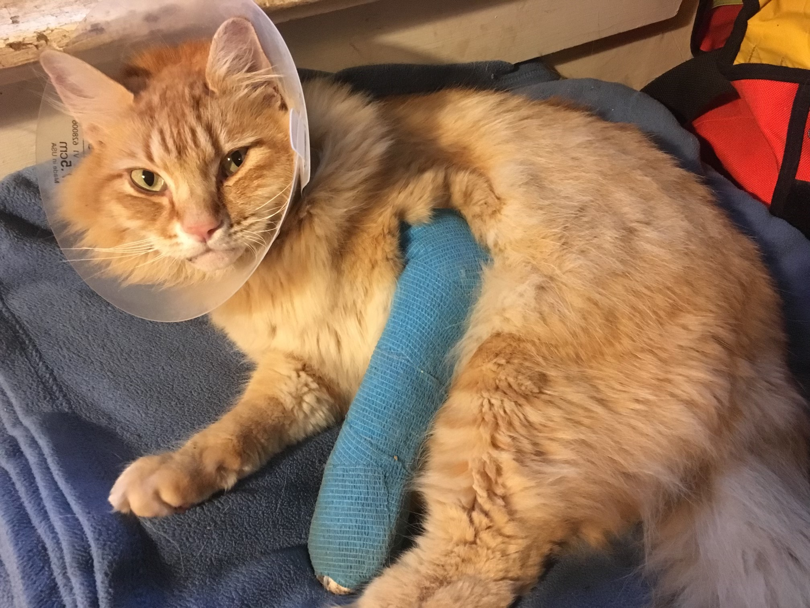

Barrett Park: A Neighbor's Perspective
How many of us have dealt with a bad neighbor? Folks with barking dogs, flood lights that shine into our bedrooms or party houses that play music too loud and too late? It can make life miserable. It can cause angry confrontations. It can compel you to move from your home.
When someone is a bad neighbor, it's because they don't care about how they negatively affect the environment around them: they are the only ones that matter.
What happens when your bad neighbor is the local park district?
What if your bad neighbor puts an RC flying field open to the public dawn to dusk 365 days/year 85 feet from your property?
This was my New Year's Day, 2023:
In the spring and summer especially, my weekday evenings after work are filled with RC noise. The longer days bring weekend RC activity of up to 12+ hours/day. Hobbyists will start arriving at 9 am, with others staying until 10 pm. Their headlights are on when they leave the property. Each hobbyist is obdurate in their entitlement to fly, not considering or caring that neighbors have been subjected to hours, days, weeks, months, years, of these sounds. As one hobbyist memorably screamed at me:
"We are going to fly when and where we like, and you are going to take it."
And they do. They've shown up before 7 am on Sunday morning and stayed well past dark flying lighted drones. They fly in the posted "No Fly Zone," they fly over our houses, they fly over Barrett Drive and Alameda road. They fly shrieking racing drones, and giant helicopters that sound like 2 cycle weed-eaters. They fly high speed RC jets, acrobatic planes and large loud drones. I can hear the noise from many of these hobby planes and drones inside my house.
You do not own your property's airspace
Regarding flyovers: neighbors are told the FAA gives them the right: we don't own our airspace.
However, it is illegal in Oregon to fly drones over private property multiple times, but the law is clumsy with the onus on the property owner to notify the drone operator that the drone is unwelcome and then pursue and prove damages if notification is ignored. I have pulled my phone out to take pictures of the drones over my property, only to have them quickly fly away. They have cameras: the operator can see you.
Hood River Valley Parks and Recreation District provides no oversight of the RC hobbyists and refuses to enforce flying rules. One neighbor was told by District Director Mark Hickok that they could contact the Columbia Gorge Aeromodelers club to complain if they liked.
Hood River Valley Parks and Recreation District also refuses to do anything to curtail non-authorized use of the property or mitigate the effects of this on me by moving their road and parking lot a little further away. Both are literally on the other side of my east property line. The parking lot has brought public drug and alcohol use, public sex, nighttime activity, overnight camping, loitering, off-leash dogs, etc. to my immediate vicinity.
In October 2020, my cat Semi was hit by a non-authorized car speeding onto the Barrett property in the middle of the night as he ran for home. He was thrown into the wire fence installed on the property line next to the access road. This resulted in a broken front leg, a broken jaw, several bottom front teeth knocked out, and $1,000 in vet fees. This caused trauma to both of us. I am just thankful he made it home to me.
Because the Park District's access road has a shared access off Barrett Dr with my driveway, I have almost been hit by cars speeding out of the property both as a driver and when walking down to get the mail. The access road used to be a narrow track serving the orchard, now it's a public road, and unsafe. When I raised the issue with former Director Lori Stirn, I was told "We own your driveway. We can keep you from accessing your property." This is not true, but that didn't stop Director Mark Hickok from raising the issue with me again in 2019.
An RC flying field simply doesn't belong next to occupied residences

Photos above taken from my backyard - that's how close this park is to my property.
So is this RC flying field an example of thoughtful development? Is Hood River Valley Parks and Recreation District being neighborly and concerned with the well being and quality of life of their Barrett Park neighbors? How would you feel if this was on the other side of the fence from you and your enjoyment of your property was reliant on whether a hobbyist decided to show up or not?
There is not another RC flying field in Oregon located so close to established residences.
Only in Hood River County.
Only the one installed at Barrett by Hood River Valley Parks and Recreation District.
While other parks agencies may have flying fields for hobbyists, they are located far from residential neighborhoods.
Many professional park services ban hobby RC aircraft and drones from parks where they would have a detrimental effect on human beings and wildlife.
These agencies include:
- National Parks Service
- Columbia Gorge National Scenic Area
- Oregon Metro Parks
- Portland Parks and Recreation
- Lake Oswego Parks and Recreation
- Seattle Parks and Recreation
I think we can all agree that Hood River is a special place and we would like to keep it that way. Living in a small town requires cooperation and respect for others. To me, this is an ethical question that goes beyond Hood River Valley Parks and Recreation District "getting to keep" their $325,800 grant which helped purchase the Barrett orchard. It goes to the fundamental rights we all should have as citizens.
We all should have the right to live our lives and enjoy the property we inhabit. For nearly a decade, Hood River Valley Parks and Recreation District has taken that right from the Hood River County residents who are negatively affected by their RC flying field. Their position is: "If you don't like it, move." This is wrong.
An RC flying field simply doesn't belong next to occupied residences.